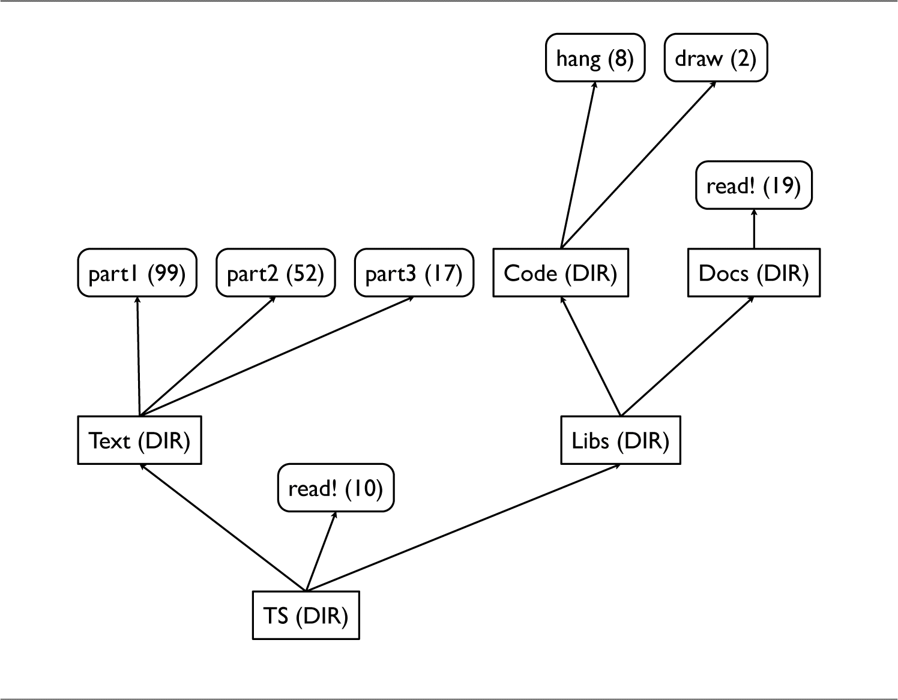

20.1 Data Analysis
Before you turn off DrRacket, you want to make sure that all your work is safely stashed away somewhere. Otherwise you have to reenter everything when you fire up DrRacket next. So you ask your computer to save programs and data in files. A file is roughly a string.
A file is really a sequence of bytes, one after another. Try to define the class of files.
On most computer systems, files are organized in directories or folders. Roughly speaking, a directory contains some files and some more directories. The latter are called sub-directories and may contain yet more sub-directories and files. Because of the hierarchy, we speak of directory trees.
Figure 123 contains a graphical sketch of a small directory tree, and the picture explains why computer scientists call them trees. Contrary to convention in computer science, the figure shows the tree growing upward, with a root directory named TS. The root directory contains one file, called read!, and two sub-directories, called Text and Libs, respectively. The first sub-directory, Text, contains only three files; the latter, Libs, contains only two sub-directories, each of which contains at least one file. Finally, each box has one of two annotations: a directory is annotated with DIR, and a file is annotated with a number, its size.

Figure 123: A sample directory tree
Exercise 329. How many times does a file name read! occur in the directory tree TS? Can you describe the path from the root directory to the occurrences? What is the total size of all the files in the tree? What is the total size of the directory if each directory node has size 1? How many levels of directories does it contain?